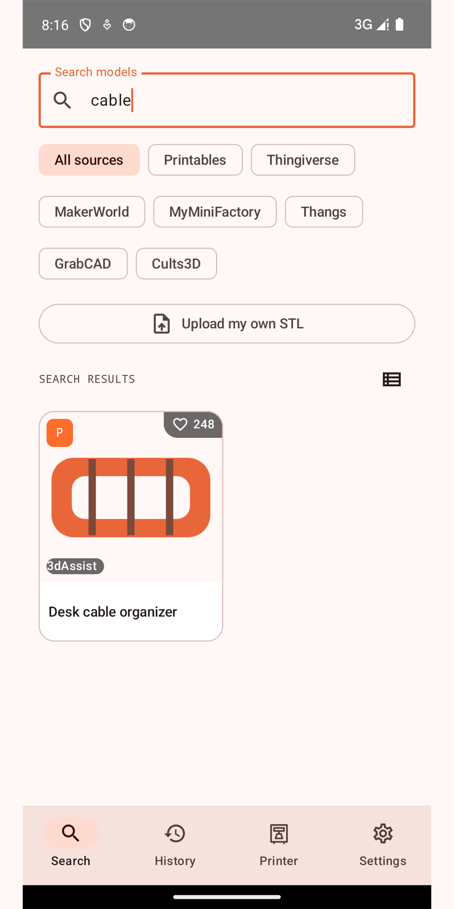
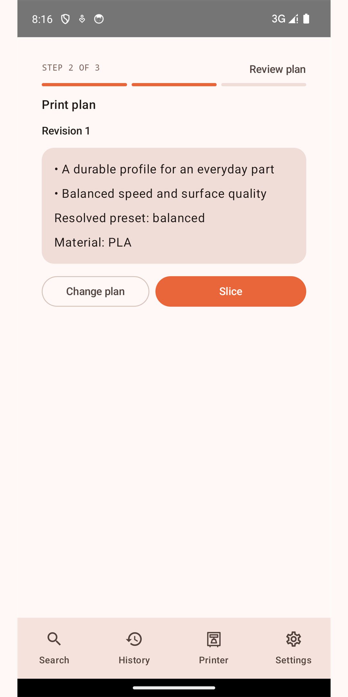
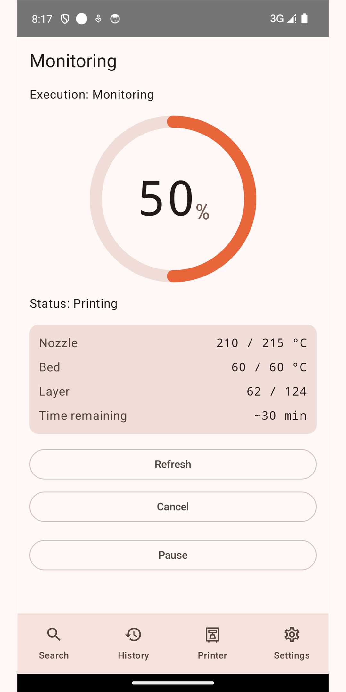

Find 3D models, prepare a print plan, and follow your printer — from one Android app.
What the app does
3dAssist brings the practical steps of 3D printing into one mobile flow. You search public model
catalogs, open a model and choose an available file. You pick quality goals and material, review the
resulting print plan with its explanations, and accept it. When a configured printer supports it,
3dAssist sends the prepared job over your local network and shows progress, temperatures and
remaining time reported by that printer. The history screen keeps past attempts for review or repeat.
How it uses Thingiverse
Search and model pages are read through the official Thingiverse API.
A model opens with its title, author and a link back to its page on Thingiverse.
Files are downloaded for the user who asked for them, on their own device, for their own print.
3dAssist does not mirror, rehost or republish Thingiverse content anywhere.
Signing in is optional and happens on Thingiverse's own page; the app never asks for a
Thingiverse password.
Licenses and attribution shown by the source are carried into the model card.
Screens

Search across catalogs

Print plan, explained

Printer status
Requirements
Android phone or tablet.
Model formats handled by the app: STL, 3MF, OBJ, STEP.
Print planning and slicing run on a 3dAssist backend the user configures; printing needs a
supported printer on the same local network.
Catalog availability, downloads and sign-in requirements depend on each independent source.
3dAssist is an independent application. It is not affiliated with, sponsored by or endorsed by
Thingiverse, Printables, MakerWorld, MyMiniFactory, Thangs, GrabCAD, Cults3D or Creality Cloud. Those names identify
their respective services.